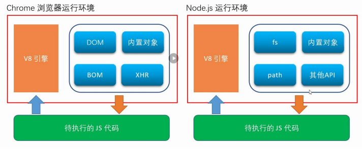
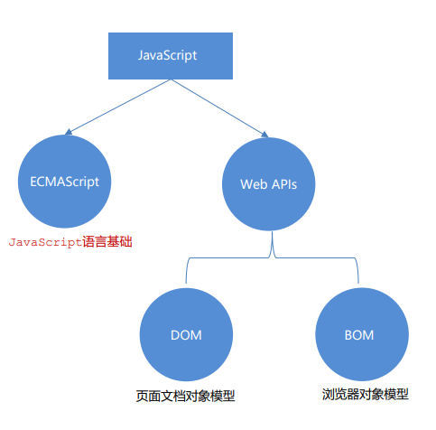
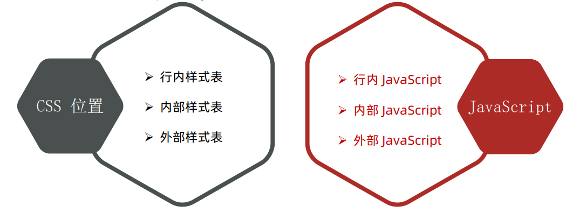
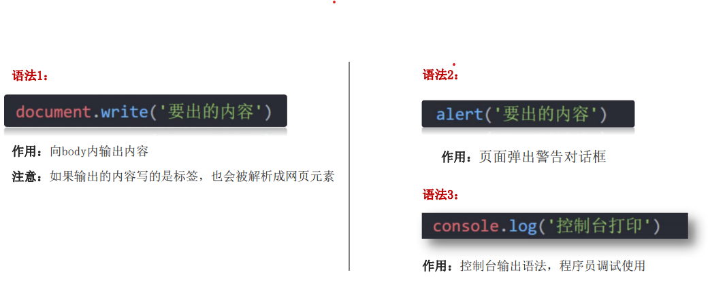
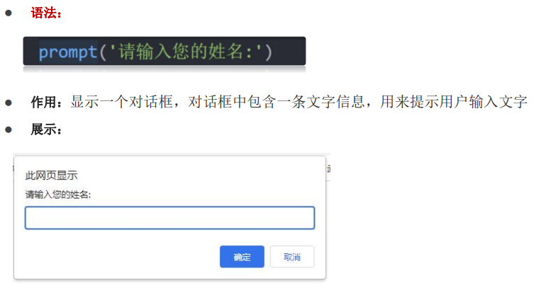
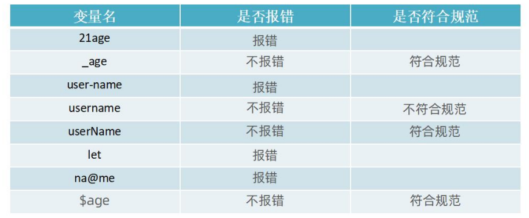
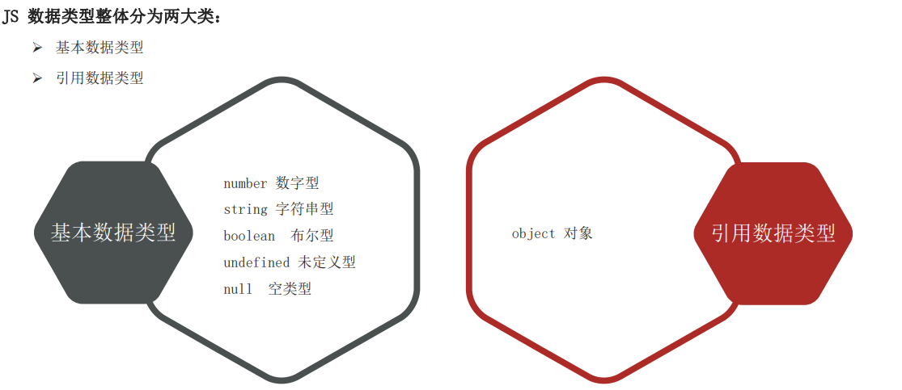
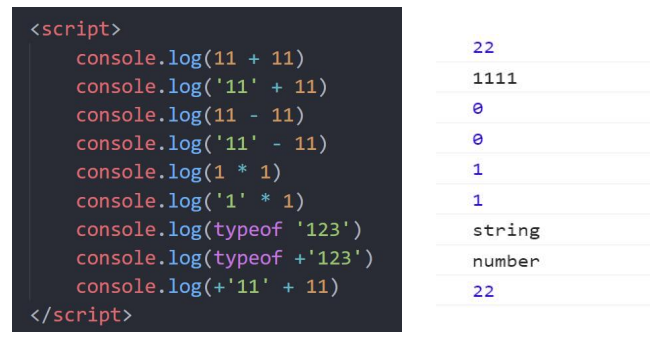

JavaScript基础语法
1. 简介
1.1 JavaScript是什么
JavaScript是一种运行在客户端（浏览器）的编程语言，实现人机交互效果。
1.2 作用
- 网页特效(监听用户的一些行为让网页作出对应的反馈)
- 表单验证(针对表单数据的合法性进行判断)
- 数据交互(获取后台的数据，渲染到前端)
- 服务端编程(node.js)

1.3 JavaScript的组成
- ECMAScript
- 规定了js基础语法核心知识
比如：变量、分支语句、循环语句、对象等等
- Web Apis
- DOM 操作文档，比如对页面元素进行移动、大小、添加删除等操作
- BOM 操作浏览器，比如页面弹窗，检测窗口宽度、存储数据到浏览器等等

2. JavaScript书写位置

2.1 内部JavaScript
直接写在html文件里，用script标签包住
规范：script标签写在</body>上面
1 |
|
2.2 外部JavaScript
代码写在以.js结尾的文件里
语法: 通过script标签，引入到html页面里
1 |
|
2.3 内联JavaScript
代码写在标签内部
1 |
|
3. JavaScript注释
- 单行注释
符号：//
作用：// 右边这一行的代码会被忽略
快捷键：ctrl + / - 块注释
符号：/* /
作用：在 / */ 之间的所有内容都会被忽略
快捷键：shift + alt + a
4. JavaScript结束符
作用： 使用英文的 ; 代表语句结束
实际情况： 实际开发中，可写可不写, 浏览器(JavaScript 引擎) 可以自动推断语句的结束位置
现状： 在实际开发中，越来越多的人主张，书写 JavaScript 代码时省略结束符
约定：为了风格统一，结束符要么每句都写，要么每句都不写（按照团队要求.）
5. JavaScript输入输出语法
输出和输入也可理解为人和计算机的交互，用户通过键盘、鼠标等向计算机输入信息，计算机处理后再展示结果给用户，这便是一次输入和输出的过程。
- 输出语法：
 - 输入语法

6. 变量
白话：变量就是一个装东西的盒子。
通俗：变量是计算机中用来存储数据的“容器”，它可以让计算机变得有记忆。
6.1 声明变量
声明变量有两部分构成：声明关键字、变量名（标识）
let 即关键字 (let: 允许、许可、让、要)，所谓关键字是系统提供的专门用来声明（定义）变量的词语
1 | let 变量名 |
6.2 变量赋值
定义了一个变量后，你就能够初始化它（赋值）。在变量名之后跟上一个“=”，然后是数值
1 | // 1. 声明一个age变量 |
6.3 变量命名规则与规范
规则：必须遵守，不遵守报错 (法律层面)
规范：建议，不遵守不会报错，但不符合业内通识 （道德层面）
- 规则：
- 不能用关键字
- 关键字：有特殊含义的字符，JavaScript 内置的一些英语词汇。例如：let、var、if、for等
- 只能用下划线、字母、数字、$组成，且数字不能开头
- 字母严格区分大小写，如 Age 和 age 是不同的变量
- 规范：
- 起名要有意义
- 遵守小驼峰命名法
- 第一个单词首字母小写，后面每个单词首字母大写。例：userName

6.4 let和var的区别
在较旧的JavaScript，使用关键字 var 来声明变量 ，而不是 let。
var 现在开发中一般不再使用它，只是我们可能再老版程序中看到它。
let 为了解决 var 的一些问题。
var 声明:
- 可以先使用 在声明 (不合理)
- var 声明过的变量可以重复声明(不合理)
- 比如变量提升、全局变量、没有块级作用域等等
var 就是个bug，别迷恋它了，以后声明变量我们统一使用 let
7. 数组
数组 (Array) —— 一种将 一组数据存储在单个变量名下 的优雅方
1 | let arr = [] |
7.1 声明语法
1 | let 数组名 = [数据1, 数据2, ...] |
- 数组是按顺序保存，所以每个数据都有自己的编号
- 计算机中的编号从0开始，所以小明的编号为0，小刚编号为1，以此类推
- 在数组中，数据的编号也叫索引或下标
- 数组可以存储任意类型的数据
7.2 数组的基本使用
1 | 数组名[下标] |
- 通过下标取数据
- 取出来是什么类型的，就根据这种类型特点来访问
7.3 一些术语
元素：数组中保存的每个数据都叫数组元素
下标：数组中数据的编号
长度：数组中数据的个数，通过数组的length属性获得
1 | let names = ['小米','华为','苹果'] |
8. 常量
- 概念：使用 const 声明的变量称为“常量”。
- 使用场景：当某个变量永远不会改变的时候，就可以使用 const 来声明，而不是let。
- 命名规范：和变量一致
- 常量使用：
1 | // 声明一个常量 |
9. 数据类型

9.1 数字类型(Number)
JavaScript 中的正数、负数、小数等 统一称为 数字类型。
数字可以有很多操作，比如，乘法 * 、除法 / 、加法 + 、减法 - 等等，所以经常和算术运算符一起。
数学运算符也叫算术运算符，主要包括加、减、乘、除、取余（求模）。
- +：求和
- -：求差
- *：求积
- /：求商
- %：取模（取余数）
- 开发中经常作为某个数字是否被整除
JavaScript中 优先级越高越先被执行，优先级相同时以书从左向右执行。
- 乘、除、取余优先级相同
- 加、减优先级相同
- 乘、除、取余优先级大于加、减
- 使用 () 可以提升优先级
- 总结： 先乘除后加减，有括号先算括号里面的~~~
9.2 字符串类型(string)
通过单引号（ ‘’） 、双引号（ “”）或反引号( ` ) 包裹的数据都叫字符串，单引号和双引号没有本质上的区别，推荐使用单引号
1 | let uname = '小明' |
注意事项：
- 无论单引号或是双引号必须成对使用
- 单引号/双引号可以互相嵌套，但是不以自已嵌套自已（口诀：外双内单，或者外单内双）
- 必要时可以使用转义符 \，输出单引号或双引号
9.2.1 字符串拼接
+运算符可以实现字符串拼接
1 | document.write('我叫' + '六碟话') |
9.2.2 模板字符串
- `` (反引号)
- 在英文输入模式下按键盘的tab键上方那个键（1左边那个键）
- 内容拼接变量时，用 ${ } 包住变量
1 | let name = '张三' |
9.3 布尔类型(boolean)
表示肯定或否定时在计算机中对应的是布尔类型数据。
它有两个固定的值 true 和 false，表示肯定的数据用 true（真），表示否定的数据用 false（假）。
1 | let isCool =true |
9.4 未定义类型(undefined)
未定义是比较特殊的类型，只有一个值 undefined
什么情况出现未定义类型？
只声明变量，不赋值的情况下，变量的默认值为 undefined，一般很少【直接】为某个变量赋值为 undefined
1 | let age // 声明变量但是未赋值 |
工作中的使用场景：
我们开发中经常声明一个变量，等待传送过来的数据。
如果我们不知道这个数据是否传递过来，此时我们可以通过检测这个变量是不是undefined，就判断用户是否有数据传递过来
9.5 数据类型 – null（空类型）
JavaScript 中的 null 仅仅是一个代表“无”、“空”或“值未知”的特殊值
1 | let obj = null |
null 和 undefined 区别：
- undefined 表示没有赋值
- null 表示赋值了，但是内容为空
null 开发中的使用场景：
官方解释：把 null 作为尚未创建的对象
大白话： 将来有个变量里面存放的是一个对象，但是对象还没创建好，可以先给个null
10. 数据类型检测
typeof 运算符可以返回被检测的数据类型。它支持两种语法形式：
- 作为运算符： typeof x （常用的写法）
- 函数形式： typeof(x)
换言之，有括号和没有括号，得到的结果是一样的，所以我们直接使用运算符的写法。
1 | let age = 19 |
11. 类型转换
JavaScript是弱数据类型： JavaScript也不知道变量到底属于那种数据类型，只有赋值了才清楚。
坑： 使用表单、prompt 获取过来的数据默认是字符串类型的，此时就不能直接简单的进行加法运算
1 | console.log('200' + '200') // 输出结果200200 |
此时需要转换变量的数据类型。
通俗来说，就是把一种数据类型的变量转换成我们需要的数据类型
11.1 隐士转换
某些运算符被执行时，系统内部自动将数据类型进行转换，这种转换称为隐式转换。
规则：
+号两边只要有一个是字符串，都会把另外一个转成字符串- 除了+以外的算术运算符 比如
-*/等都会把数据转成数字类型
缺点：
- 转换类型不明确，靠经验才能总结
小技巧：
+号作为正号解析可以转换成数字型- 任何数据和字符串相加结果都是字符串

11.2 显示转换
编写程序时过度依靠系统内部的隐式转换是不严禁的，因为隐式转换规律并不清晰，大多是靠经验总结的规律。
为了避免因隐式转换带来的问题，通常根逻辑需要对数据进行显示转换。
11.2.1 转换为数字型
- Number(数据)
- 转成数字类型
- 如果字符串内容里有非数字，转换失败时结果为 NaN（Not a Number）即不是一个数字
- NaN也是number类型的数据，代表非数字
- parseInt(数据)
- 只保留整数
- parseFloat(数据)
- 可以保留小数
11.2.2 转换成字符型
String(数据)
- 变量.toString(进制)
 微信
微信 支付宝
支付宝